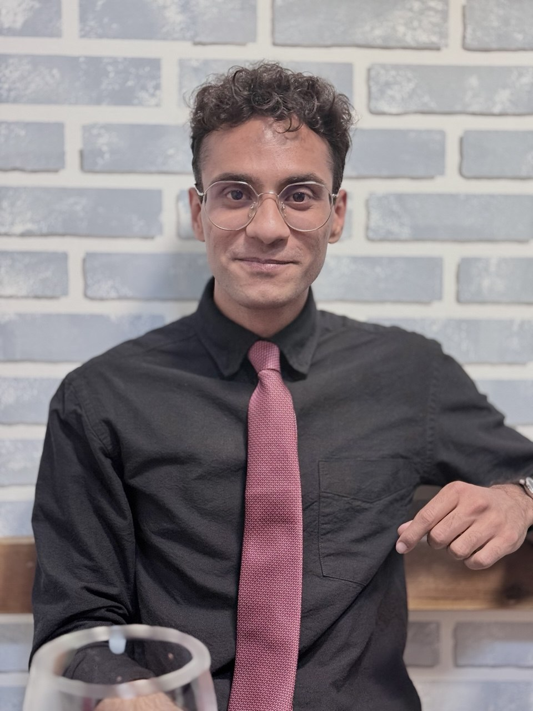

M.Sc. in Computer Science & Engineering — AI
Politecnico di Milano
Graduate coursework and research focused on artificial intelligence, machine learning, and modern software engineering practice.

I build software end‑to‑end — web, mobile, backend, and the ML underneath — and ship day-to-day alongside modern AI tooling. Happiest where product and research overlap.
Engineer and builder. I like the full loop — backend, UI, and, increasingly, the model underneath.
For two years, I led a team of four at a company in Tehran across a Django backend and a Flutter client — coding, reviewing PRs, and sitting on the hiring side of the table.
My bachelor's thesis pulled me into machine learning for good — deep neural networks applied to thyroid carcinoma on cytology slides. I'm now finishing a master's in Computer Science & Engineering at Politecnico di Milano, on the AI track.
I care about the gap between theory and something that actually ships — math on one side, a person opening an app on the other. The interesting work lives in between.
Full-stack — Flutter client, backend services, and AI integrations. Ship features end-to-end, wire LLMs and voice models into production flows, and build automations across Zapier, n8n, calendars, and messaging platforms. Claude Code is part of the daily workflow.
Directed the development of projects across Dart/Flutter and Python/Django, owning both code bases while leading a team of four developers. Ran interviews during hiring, mentored teammates, and kept a collaborative rhythm across frontend and backend work.
Sole developer responsible for building and maintaining a Flutter application end-to-end — architecture, implementation, and release.
Politecnico di Milano
Graduate coursework and research focused on artificial intelligence, machine learning, and modern software engineering practice.
Sharif University of Technology
Strong foundation in algorithms, mathematics, and systems. Thesis on applying deep learning to cytology-based diagnosis of thyroid carcinoma.
Happy to talk about engineering roles, research collaborations, or building anything product-shaped with LLMs in the loop.